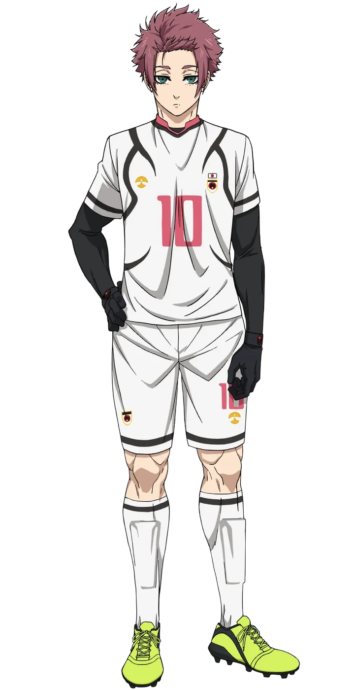

Звірена біографія та арки
Від Камакури й академії Re Al в Іспанії до дуелі U-20 проти Blue Lock 11 та погляду в бік ЧС U-20 — жодної вигадки чи викривлень канону.
«Тільки ідіот вигадує привід не грати. Тисяча спроб — і лише прекрасне руйнування має значення на полі.»
Автономний інтерактивний архів, присвячений Ітоші Сае — гравцю молодіжки іспанського Re Al та представнику New Generation World XI. Тут точна хронологія манги й факти з Egoist Bible поєднані з живим симулятором дзвінка, галереєю матчу U-20 та 20-питальним тестом.
Від Камакури й академії Re Al в Іспанії до дуелі U-20 проти Blue Lock 11 та погляду в бік ЧС U-20 — жодної вигадки чи викривлень канону.
Натисни на ієрогліф 冴 у лівому верхньому куті шапки, щоб змінити атмосферу сайту й миттєво перейти до інтенсивної теми Flow.
Обери будь-який сектор для миттєвого переходу до аналізу, кадрів або статистики.
Жива розмова 1-на-1 із плеймейкером, розбір сцен U-20 та аудит знань канону.
Постав запитання Сае про його перехід у півзахист в Іспанії, ставлення до Ріна, Шідо, Ісагі, Айку, Локі, Кайзера чи попроси оцінити тебе. Кожна відповідь змінює вираз обличчя та шкалу поваги.
Від ранніх спогадів у Камакурі до пробудження Flow, голу з нульового кута й останнього зіткнення братів Ітоші у фіналі матчу.
Чесний тест без підказок у кнопках: від дитинства в Камакурі до психології плеймейкера та нових талантів.
Канонічні біометричні параметри, звички з Egoist Bible та тактичний профіль Ітоші Сае.

Обери компонент гри Ітоші Сае, щоб розкрити механіку прийому, статистику ефективності та пов’язані кадри з матчу U-20.
Замість вигадливих фінтів наперед Сае читає момент, коли центр ваги захисника зміщується, і миттєво ламає його рух мінімальним дотиком.
Безперервне сканування поля на 360° перетворює гравців на векторні траєкторії: ідеальний пас приходить туди, де форвард лише буде через півсекунди.
Блискавичний подвійний дотик і закрутка зовнішнім або внутрішнім підйомом лівої ноги, здатна завести м’яч у сітку буквально з лінії ауту.
Вир чисел і формул навколо тіла у другому таймі проти Blue Lock 11: Сае випереджає темп кожного захисника ще до початку їхнього кроку.
Фільтруй етапи біографії: від дитячої клятви в Камакурі та зміни позиції в Мадриді до матчу проти Blue Lock 11 і горизонту ЧС U-20.
Лише справжні кадри з манги та 2 сезону аніме Blue Lock. Натисни на будь-який фрейм для повного сюжетного та тактичного розбору.
Синхронізуй оберт двох орбіт у ритмі матчу U-20. Натискай W / S / A / D у мить дотику орбіти до центру наступної плитки — змагайся проти бота Сае в реальному часі за найвищу точність.
Верхня доріжка — ти (Рін, Blue Lock). Нижня доріжка — бот Ітоші Сае (U-20), який у реальному часі б’є ту саму трасу. Натискай W/S/A/D в момент входження орбіти на наступний тайл.
4 блоки по 5 питань: біографія й Камакура, арсенал і Metavision, Re Al та U-20, психологія й суперники. Пояснення відкривається лише після відповіді.
Жодних підказок у тексті самих варіантів: лише лаконічні канонічні формулювання та чесна перевірка твоїх знань про плеймейкера № 10.